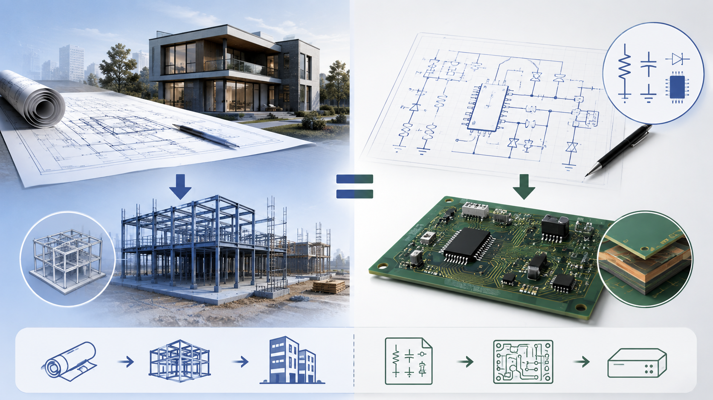
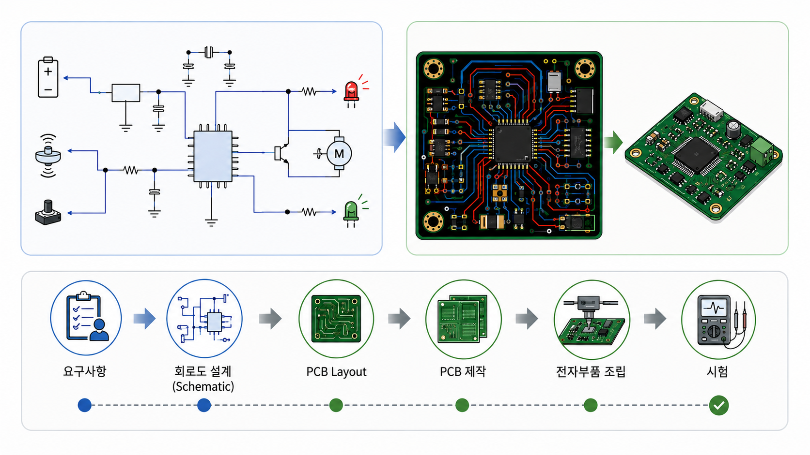
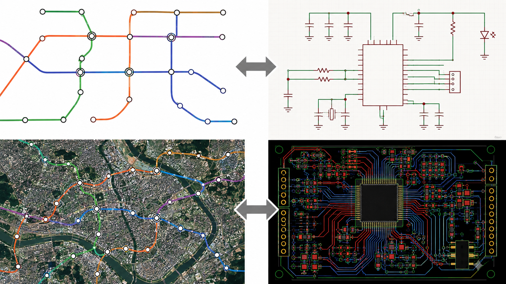
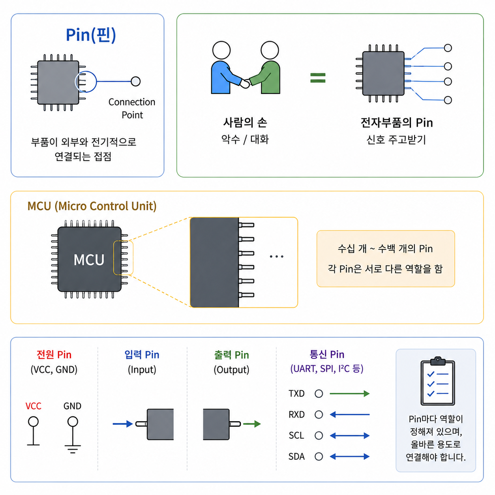
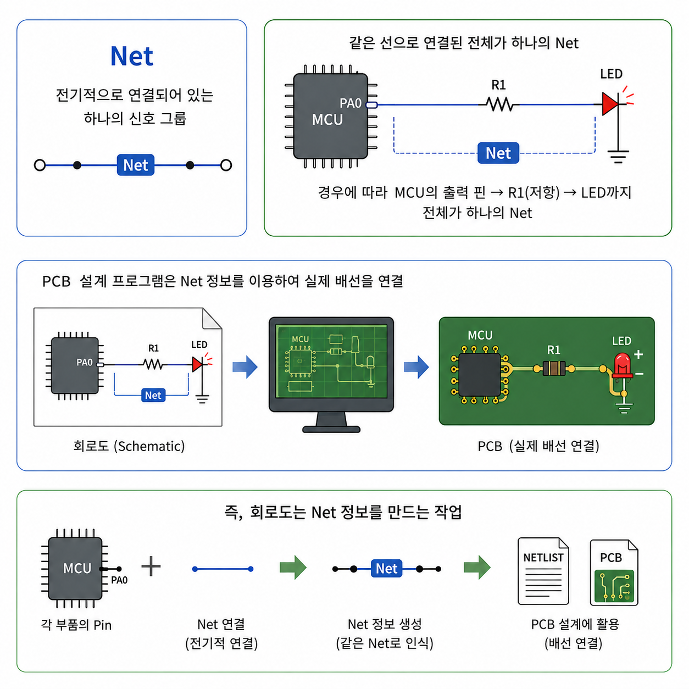
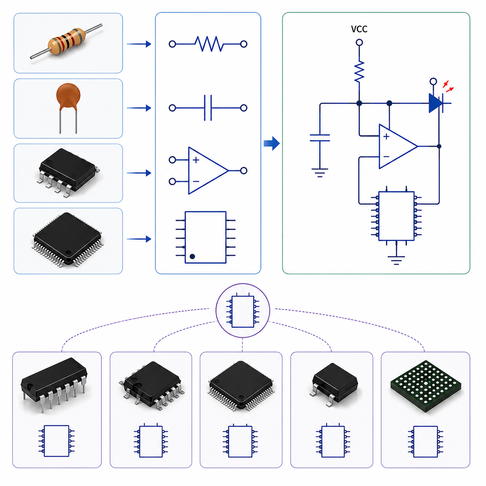
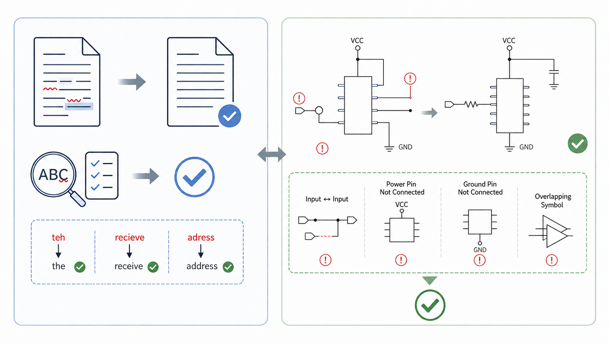

전자제품의 설계는 어디서부터 시작될까요?
전자제품을 건축물에 비유하면 PCB는 건물의 뼈대와 배선입니다. 그렇다면 건물을 짓기 전에 반드시 필요한 것은 무엇일까요?
건물을 짓기 전에는 설계도가 먼저 준비되어야 합니다. PCB도 마찬가지입니다. PCB를 설계하기 전에는 반드시 회로도(Schematic)가 필요합니다. 회로도는 전자제품이 어떻게 동작해야 하는지를 표현하는 전자회로의 설계도입니다.
회로도는 PCB 개발의 설계도입니다.
설계도 없이는 건물을 지을 수 없듯이, 회로도 없이 PCB를 설계하는 것은 거의 불가능합니다.

이번 편에서는
- 회로도가 무엇인지
- 회로도를 구성하는 핵심 요소
- 좋은 회로도를 만드는 방법
- 설계 오류를 미리 찾아주는 ERC
까지 차례대로 살펴보겠습니다.
1. 회로도(Schematic)가 뭐예요?
회로설계는 필요한 기능을 수행하도록 전자부품을 연결하는 작업입니다. 예를 들어 부품에 전원을 공급하고, 센서가 감지한 신호를 전달하고, MCU가 계산하고, LED나 모터를 동작시키는 모든 과정이 회로설계에서 결정됩니다.
PCB는 그 설계를 실제 기판으로 구현한 결과물입니다. 즉, 회로도는 “무엇을 어떻게 연결할 것인가”를 정의하는 것이고, PCB는 그것을 실제로 만드는 과정입니다.

PCB 설계 프로젝트는 일반적으로 요구사항 → 회로도 설계(Schematic) → PCB Layout → PCB 제작 → 전자부품 조립 → 시험 의 순서로 진행됩니다.
회로도는 실제의 생김새와 다른 형식으로 전기적인 연결 관계만 표현합니다. 실제 PCB에서는 부품이 가까이 붙어 있을 수도 있고 멀리 떨어질 수도 있지만, 회로도에서는 부품들간의 연결을 알아보기 쉽도록 배치해야 합니다.
회로도는 지하철 노선도, PCB는 위성지도에 표시한 지하철 지도와 같습니다.
지하철 노선도는 실제 거리, 방향과 다르게 표현되지만 어디와 어디가 연결되는지는 매우 잘 보여줍니다. 회로도와 PCB도 같은 개념입니다.

2. 회로도를 구성하는 핵심 요소
Pin이란?
회로도에서 가장 작은 단위는 Pin(핀)입니다. Pin은 부품이 외부와 전기적으로 연결되는 접점(Connection Point)을 의미합니다.
다른 사람과 악수를 할 때 손이 필요하듯, 전자부품도 다른 부품과 신호를 주고받기 위해 Pin을 사용합니다.
MCU(Micro Control Unit)에는 수십 개에서 많게는 수백 개의 Pin이 있으며, 각 Pin은 서로 다른 역할을 합니다.
- 전원을 공급받는 Pin들 (VCC, GND)
- 신호를 입력받는 Pin들 (Input)
- 신호를 출력하는 Pin들 (Output)
- 통신을 위한 Pin들 (UART, SPI, I²C 등)
즉, Pin마다 맡은 역할이 정해져 있으며, 설계자는 각 Pin을 올바른 용도로 연결해야 합니다.

Net이란?
회로도에서 가장 중요한 개념들 중 하나가 Net입니다.
Net은 전기적으로 연결되어 있는 하나의 신호 그룹을 의미합니다.
- MCU의 출력 핀과 LED 저항이 하나의 선으로 연결되어 있다면 그 선 전체가 하나의 Net입니다.
- 경우에 따라서는 단순부품을 거치는 Net, 예를 들어 저항을 거쳐 연결된 Net은 하나의 Net으로 간주하기도 합니다.
PCB 설계 프로그램은 “이 부품의 어느 Pin과 저 부품이 어느 Pin이 같은 Net으로 연결되어 있다”라는 정보를 이용하여 PCB에서 실제 배선을 연결합니다.
즉, 회로도는 Net 정보를 만드는 작업이라고 생각하면 이해하기 쉽습니다.

Symbol이란?
회로도에는 실제 부품의 형상을 표현하지 않고, 그 대신 Symbol을 사용합니다.
Symbol은 부품의 기능을 나타내는 기호입니다.
- 저항은 지그재그 모양
- 커패시터는 평행선
- OP Amp는 삼각형
- MCU는 사각형
Symbol은 부품의 모양을 나타내는 것이 아니라 전기적인 연결 핀을 표현하는 것입니다. 실제 부품의 생김새와는 관계없이 회로도에서는 “어느 핀이 어디에 연결되는가”만 중요합니다.
하나의 부품은 실제의 모습, Symbol, PCB Footprint, 3D Model을 각각 따로 가지고 있습니다.
회로도에서 사용하는 형태는 Symbol, PCB에서 사용하는 형태는 Footprint라고 합니다.

3. 좋은 회로도를 만드는 방법
회로도가 부품간의 신호를 연결하기만 하는 것만으로는 좋은 회로도가 되지는 않습니다. 누가 보더라도 이해하기 쉬운 회로도가 좋은 회로도입니다.
1) 계층 구조(Hierarchical Design)
큰 프로젝트는 회로를 여러 개의 블록으로 나누어 설계합니다. 예를 들어 Power, MCU, Memory, USB, Ethernet, Display처럼 기능별로 나누면 설계도 훨씬 이해하기 쉽습니다. 건물의 설계도면이 전기 도면, 배관 도면, 소방 도면 등으로 나뉘어진 것과 같은 원리입니다.
2) Page 구성
좋은 회로도는 페이지 순서도 중요합니다. 대표적인 구성은 Cover Sheet, Power, MCU, Clock, Memory, Interface, Sensor, Connector 등입니다. 서로 연관된 페이지를 가깝게 배치하면 검토와 유지보수가 훨씬 쉬워집니다.
3) Signal Naming
Net의 이름을 의미 있게 정하는 것도 매우 중요합니다. NET001, NET034, WIRE15 등의 이름을 사용하는 것보다는 USB_D+, USB_D-, SPI_MOSI, SPI_MISO, RESET, 3V3, VBAT처럼 이름만 봐도 어떤 신호인지 알 수 있어야 합니다. Net 이름이 잘 정해져 있으면 문서 없이도 회로를 이해할 수 있게 해 줍니다.
4) 재사용(Reuse)
최근에는 이미 검증된 회로를 재사용하는 경우가 많습니다. 예를 들어 USB 회로, Ethernet 회로, Power 회로 등은 프로젝트마다 거의 동일하게 사용됩니다. 매번 새로 그리는 것보다 이미 검증된 회로 블록을 사용하는 것이 품질과 개발 속도를 동시에 높여줍니다.
4. 회로 검증(ERC)의 중요성
회로를 모두 그렸다고 바로 PCB를 만들면 안 됩니다. 사람은 실수를 할 수 있기 때문입니다. 따라서 회로설계 프로그램에는 ERC(Electrical Rule Check)라는 기능이 있습니다.
ERC는 회로도의 맞춤법 검사기와 비슷합니다.
문서를 작성할 때 오탈자를 검사하듯, ERC는 회로 연결의 오류를 검사합니다.
ERC는 회로도를 자동으로 검사하여 전기적으로 이상한 부분을 찾아주는 기능입니다. 물론 ERC가 모든 문제를 찾아주지는 않지만, 기본적인 실수를 줄이는 데 매우 효과적입니다.
예를 들어 다음과 같은 문제가 있다면 반드시 확인해야 합니다.
- IC 부품의 입력용 Pin과 입력용 Pin끼리만 연결되어 신호를 출력하는 장치가 없는 경우
- 전원 Pin이 연결되지 않아 독립된 경우
- 겹쳐져 있는 symbol 등이 있는 경우

ERC에서 오류가 없다고 해서 제품이 반드시 정상 동작하는 것은 아닙니다.
예를 들어 저항값을 잘못 선택한 경우, 전원 용량이 부족한 경우, 회로 동작 원리를 잘못 이해한 경우 등은 ERC가 판단하지 못합니다.
따라서 ERC는 기본적인 연결 오류를 찾아주는 도구이며, 최종 검토는 설계자의 몫입니다.
마무리
회로도 설계는 PCB 개발의 출발점입니다. 좋은 회로도는 단순히 연결만 정확한 것이 아니라, 누구나 쉽게 이해하고 검토할 수 있도록 체계적으로 작성된 회로도입니다.
또한 Net, Symbol, 계층 구조, 신호 이름 규칙, 재사용과 같은 기본 원칙을 잘 지키면 개발 효율과 품질을 크게 높일 수 있습니다. 여기에 ERC(Electrical Rule Check)를 활용하면 많은 실수를 PCB 제작 전에 발견하여 시간과 비용을 절약할 수 있습니다.
다음 편에서는 “PCB Layout”을 주제로, 실제 PCB의 물리적인 구조를 정의하고, 부품을 배치하고, 신호를 연결하는 과정에 대해서 알아보겠습니다.